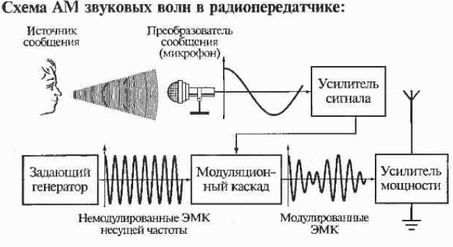
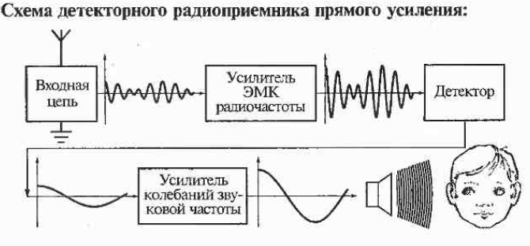
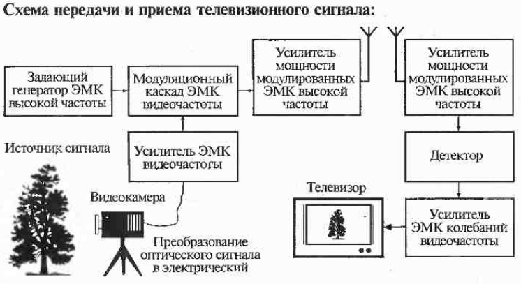
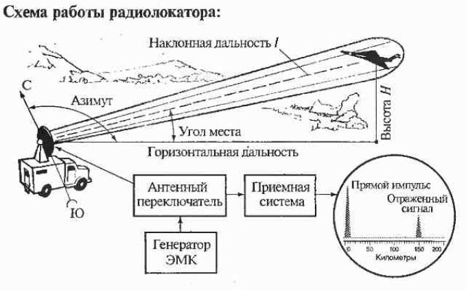
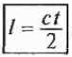
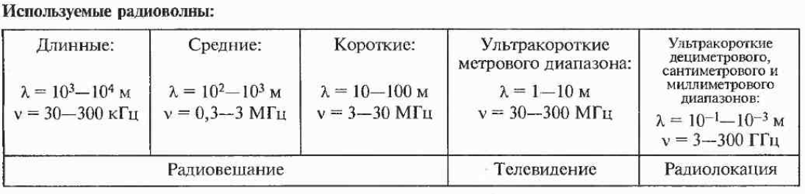

- Радиосвязь - передача какой-либо информации с помощью радиоволн, то есть электромагнитных колебаний (ЭМК), частота которых меньше 3*105 Мгц. Радиосвязь производится путем излучения радиопередатчиком модулированных электромагнитных волн и их демодуляции в радиоприемнике.
- Модуляция электромагнитных волн - изменение параметров (амплитуды, фазы, частоты) электромагнитных колебаний с частотами, значительно меньшими частоты самой электромагнитной волны. При амплитудной модуляции (АМ) изменяется только амплитуда электромагнитных волн, при частотной модуляции (ЧМ) изменяется только частота волны, при фазовой модуляции (ФМ) из меняется начальная фаза волны.
- Демодуляция - процесс выделения из электромагнитных колебаний несущей частоты, колебаний, содержащих информацию (колебаний звуковой частоты, видеочастоты и других.

Звуковая волна поступает в микрофон, преобразуется в электрический сигнал, усиливается и в модуляционном каскаде модулирует радиосигнал. После усилителя мощности модулированные электромагнитные колебания через антенну передаются в пространство.

Модулированная электромагнитная волна после приемной антенны усиливается в детекторе, демодулируется, выделенные звуковые колебания усиливаются и поступают на громкоговоритель.
Оптический сигнал преобразуется в электрический, в модуляционном каскаде модулирует электромагнитные колебания и после усилителя мощности через антенну поступает в пространство. В приемной системе детектор выделяет сигнал видеочастоты, сигнал усиливается и преобразуется в телевизоре в оптический.
- Радиолокация - обнаружение различных объектов и определение их координат с помощью радиоволн. Радиолокация основана на явлении отражения или рассеяния радиоволн телами. Заметное отражение радиоволн происходит в том случае, когда линейные размеры тела превращают длину радиоволны.
Импульсы малой длительности (»10- 6 с) от генератора электромагнитных колебаний поступают через антенный переключатель на антенну. Антенна непрерывно вращается, отыскивая цель. Обнаружив цель, антенна с помощью специальных устройства автоматически следит за целью, поворачиваясь по азимуту и углу места. Сигнал электромагнитных колебаний, отразившись от цели, поступает на антенну, антенный переключатель, приемную систему и индикатор.
- Наклонная дальность до цели определяется по формуле:  , где t-время между посылкой сигнала и регистрацией его на экране радиолокатора.
- Регистрирующим устройством в радиолокаторе является электронно-лучевая трубка.
